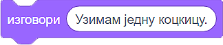
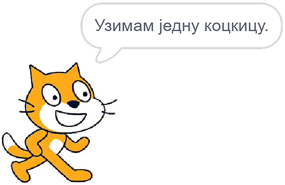
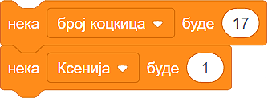
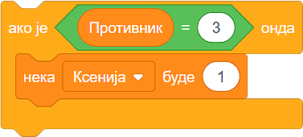

Алгоритамски начин размишљања¶
У оквиру ове лекције упозћеш се са следећим појмовима:
рачунар
алгоритам
алгоритамски начин размишљања
програм
блоковско програмирање - Scratch
Живимо окружени рачунарима.
Сакривени су у нашим мобилним уређајима, сатовима, телевизорима, кухињским апаратима, аутомобилима, лифтовима. Олакшавају нам послове, а учење чине занимљивијим. Захваљујући рачунарима, слободно размењујемо информације и брзо им приступамо.
Често се чини да су рачунари паметни. Морамо да те разочарамо – рачунари, још увек, не могу самостално да мисле! Рачунари су машине које следе упутства (наредбе) и тако обављају различите задатке.
Наредбе рачунарима пишу људи, мали и велики програмери. Програм je низ наредби које рачунар извршава.
Да би рачунар могао да ти помогне да брже и лакше обављаш неки посао, мораш да га за то „обучиш“ - програмираш.
Истина је да проблеми умеју да делују нерешиво, попут магије.
Погледај следећи видео:

Ксенија је споменула реч алгоритам. Алгоритам је низ корака који воде до решења неког проблема. Иако је деловало да Ксенија има пуно среће, у ствари се радило о прецизном низу корака које је она следила како би победила.
У чинију стави 14 коцкица и поводац.
У чинију стави 14 коцкица и поводац.
Узети прву коцкицу.
Узети прву коцкицу.
Противник узима 2 коцкице.
Ако противник узме 1 коцкицу, узети 2 коцкице.
Противник узиме 1 коцкицу.
Ако противник узме 2 коцкице, узети 2 коцкице.
Противник узиме 3 коцкице.
Ако противник узме 3 коцкице, узети 1 коцкицу.
Противник узима 2 коцкице.
Поновити кораке 3, 4 и 5 четири пута.
Противник узима поводац.
Поновити кораке 3, 4 и 5 четири пута.
- Алгоритам А
- Објашњавајући како побеђује, Ксенија је рекла да, у првом кругу, Мита узима две коцкице. Да ли би Ксенија победила да је Мита, уместо две, узео само једну коцкицу? Покушај да замислиш такву ситуацију и поново реши овај задатак.
- Алгоритам B
- Имаш одлично запажање и начин размишљања програмера!
Q-7: Који алгоритам је Ксенија примењивала?
Алгоритам А
Алгоритам Б
Примећујеш да је, у Ксенијином алгоритму, природа корака различита.
Неки кораци се извршавају по редоследу како су наведени (У чинију ставити 17 коцкица и поводац; Узети прву коцкицу);
Неки кораци зависе од одређеног услова (Ако противник узме 1 коцкицу, узети 3 коцкице, …);
Неки кораци се понављају (кораци 3, 4 и 5 понављају се 4 пута),
Ток алгоритма је делом линијски (корак по корак), делом условљен (од потеза противника зависи Ксенијин потез) и цикличан (неки кораци се понављају).
Да би Ксенијин алгоритам разумео и рачунар, мораш да му га објасниш користећи неки од програмских језика.
Програмски језици углавном су текстуални. То значи да програмер пише наредбе у специфичном облику енглеског језика.
На пример, ако користиш Пајтон (енгл. Python), наредба да рачунар на екрану испише „Узимам једну коцкицу.“ изгледа овако:
print (‘Uzimam jednu kockicu.’).
Почетницима, текстуални програмски језици често делују сложено. Зато су осмишљени визуелни програмски језици. Они ти омогућавају да програмираш без куцања наредби, спајањем графичких блокова. Ух, и ово делује компликовано!
Да бисмо те уверили у једноставност визуелног програмирања показаћемо ти како у програмском језику Скреч (енг. Scratch) изгледа исписивање реченице „Узимам једну коцкицу.“
{kind=link}
Када рачунар извши ову наредбу, на екрану ће се појавити:
{kind=link}
Симпатично, зар не?
Знамо да немаш програмерско искуство у Скречу. Ипак, верујемо да ћеш моћи да одговориш на следећа питања.
- Кораке 1 и 2
- Браво! За тебе је програмирање заиста једноставно!
- Кораке 1 и 3
- Хм. Шта се дешава у трећем кораку алгоритма? Размисли.
- Кораке 2 и 3
- Хм. Шта се дешава у трећем кораку алгоритма? Размисли.
Q-8: На које кораке Ксенијиног алгоритма се односи следећи низ наредби?
{kind=link}
- Корак 3
- Само полако! Размисли опет.
- Корак 4
- Само полако! Размисли опет.
- Корак 5
- Браво! Већ препознајемо будућег програмера!
Q-9: Ова наредба делује сложеније. На који корак Ксенијиног алгоритма се она односи?
{kind=link}
Програмирање треба да посматраш као нову врсту писања. Када овладаш техникама и логиком програмирања, моћи ћеш да „пишеш“ нове врсте „текста“ - интерактивне приче, игре, анимације и симулације.
Рачунар је предвидљива машина. Радиће баш оно што му кажеш. Твој програм извршаваће се на потпуно исти начин на различитим рачунарима.
Покушај да даш неко упутство другарицама и друговима. Видећеш да ће свако од њих, иако су добили прецизна упутства, задатак урадити на свој начин. На људе утичу њихове емоције, предзнање, искуство и још много чинилаца.
Лепота програмирања лежи у могућности да машташ и, кроз стварање програма, оствариш своје снове. Рачунар, сам по себи, не рађа креативност, али помаже да се она чује далеко и одјекне громогласно!
Провери своје знање пролазећи кроз наредна питања и вежбе.